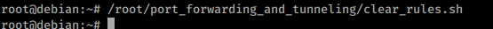
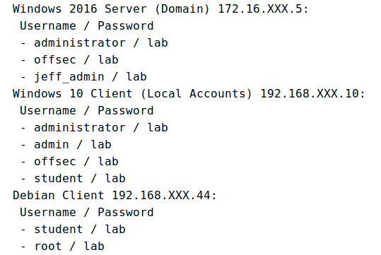
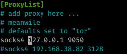
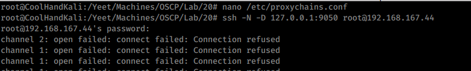
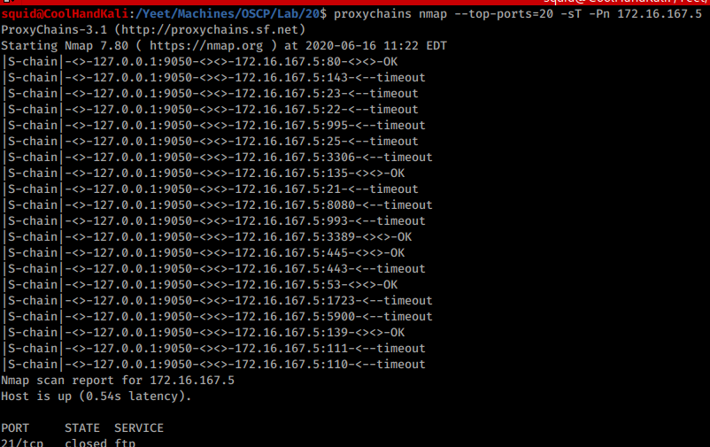
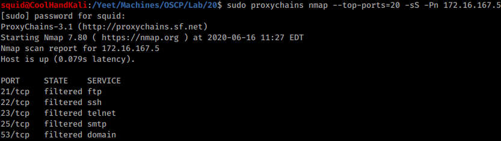

20.2.3.1 Exercises
☐ Connect to your dedicated Linux lab client and run the clear_rules.sh script from /root/port_forwarding_and_tunneling/ as root.
☐ Take note of the Linux client and Windows Server 2016 IP addresses.
☐ Create a SOCKS4 proxy on your Kali machine, tunneling through the Linux target.
☐ Perform a successful nmap scan against the Windows Server 2016 machine through the proxy.
☐ Perform an nmap SYN scan through the tunnel. Does it work? Are the results accurate?
The command does work, but the results are innacurate.